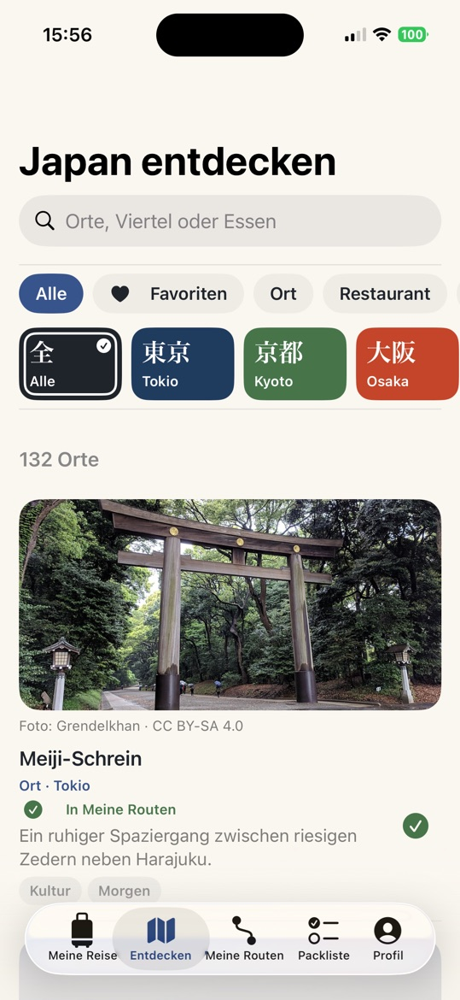
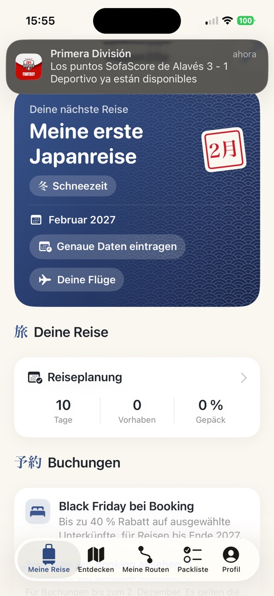
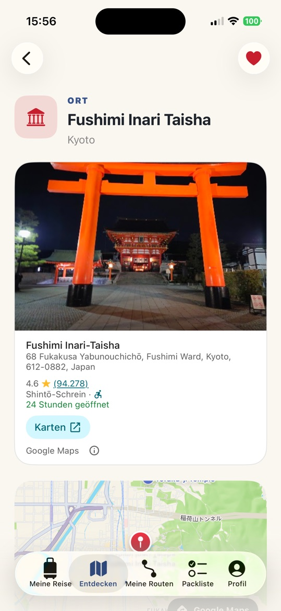
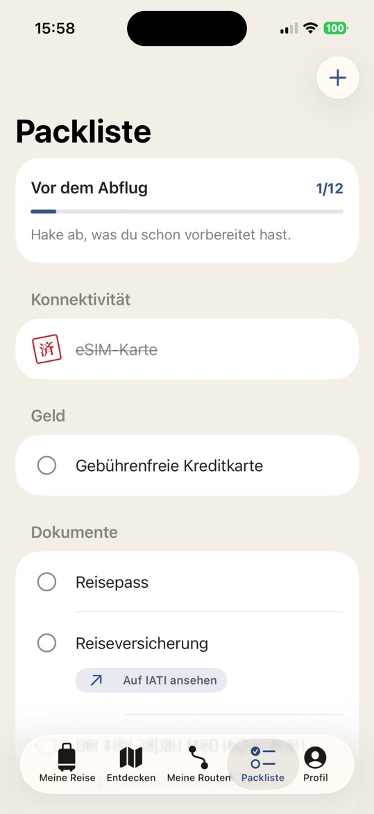
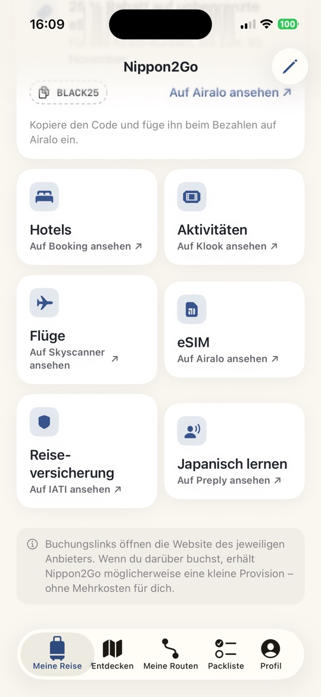

Entdecken
Über 125 handverlesene Orte
Tempel, Aussichtspunkte, Stadtviertel, Restaurants, Hotels und Erlebnisse in Tokio, Kyoto, Osaka, Nara, Kamakura, Yokohama und Hiroshima, mit Fotos und Filtern nach Art und Stadt.

Entdecke die schönsten Orte, mach daraus realistische Routen für jeden Tag und reise mit allem Nötigen an, vom Reisepass bis zum JR Pass.
iPhone (iOS 17+) · Android

Von der ersten Idee bis zu deinem letzten Tag in Japan.
Entdecken
Tempel, Aussichtspunkte, Stadtviertel, Restaurants, Hotels und Erlebnisse in Tokio, Kyoto, Osaka, Nara, Kamakura, Yokohama und Hiroshima, mit Fotos und Filtern nach Art und Stadt.

Meine Routen
Füge Orte zu deiner Route hinzu, und Nippon2Go fasst nahe gelegene Stopps für jede Stadt zu Tagen zusammen, mit Uhrzeiten, Entfernungen und dem Hinweis, ob du besser zu Fuß gehst oder den Zug nimmst.

Orte
Google-Bewertung, Öffnungszeiten und Adresse, eine Karte von Apple und die Wegbeschreibung mit Google Maps. Attraktionen mit Eintritt verlinken direkt auf ihre Tickets.

Packliste
Reisepass, Reiseversicherung, eSIM, Steckdosenadapter, JR Pass … dazu deine eigenen Einträge, die beim Abhaken einen 済-Stempel bekommen.

Buchungen
Hotels bei Booking.com gleich mit deiner Stadt und deinen Reisedaten, Aktivitäten und Tickets bei Klook, eine eSIM für Japan von Airalo, Flüge bei Skyscanner, eine Reiseversicherung von IATI und Japanischunterricht mit Lehrkraft bei Preply.

Geteilte Reisen Demnächst
Lade deine Mitreisenden per Link oder Code ein: Alle sehen und bearbeiten dieselbe Reise auf ihrem eigenen Handy, ob iPhone oder Android. Du siehst, wer welchen Plan hinzugefügt hat und was sich geändert hat, und alle behalten ihre eigenen Favoriten, Meine Routen und ihre Packliste. Ein Konto brauchst du nur zum Teilen.
Ein bearbeitbarer Plan für jeden Tag, den du in japanischer Zeit in den Kalender deines iPhone übernehmen kannst.
Kein Konto nötig. Deine Reisen bleiben auf deinem Handy. Verfügbar in 7 Sprachen.
Schnelle Antworten auf die häufigsten Fragen.
Nein. Du kannst die ganze App ohne Anmeldung nutzen. Wenn du möchtest, kannst du dich unter Profil → Konto mit Apple oder Google anmelden. Deine Reisen werden so oder so nirgendwohin hochgeladen.
Nur auf deinem Handy. Reisen werden nicht zwischen Geräten synchronisiert, und wenn du die App löschst, werden auch deine Reisen gelöscht.
Deine Reise, deine Routen und deine Packliste sind auf deinem Handy gespeichert. Für Karten, Fotos der Orte, Ortsdetails von Google und Buchungslinks brauchst du eine Internetverbindung.
Öffne unter Entdecken einen Ort und tippe auf Zu meiner Route hinzufügen. Unter Meine Routen gruppiert Nippon2Go deine Orte nach Stadt und Entfernung und verteilt sie auf Tage, je nach dem Tempo, das du unter Dein Tempo in allen Städten wählst (Entspannt, Ausgewogen oder Aktiv). Du kannst die Besuchszeiten anpassen und die Route dann in deinen Zeitplan übernehmen. Uhrzeiten und Entfernungen sind Schätzungen, prüfe also vor dem Losgehen Öffnungszeiten und Verkehrsmittel.
Tippe unter Meine Reise auf Reiseplanung zum Kalender hinzufügen, prüfe die Termine und bestätige. Nippon2Go fragt nur nach der Erlaubnis, Termine hinzuzufügen. Deinen Kalender kann die App nicht lesen.
Nippon2Go öffnet Booking.com gleich mit deiner Stadt und deinen Reisedaten und verlinkt auf Klook für Aktivitäten und Tickets, Airalo für eine eSIM für Japan, Skyscanner für Flüge, IATI für die Reiseversicherung und Preply für Japanischunterricht. Gebucht wird direkt bei diesen Anbietern, und es gelten deren Bedingungen und Datenschutzerklärungen.
Geh zu Profil → App-Sprache. Du kannst zwischen English, Español, Français, Deutsch, Italiano, 한국어 und 繁體中文 wählen, und die Änderung gilt sofort.
Zum Abmelden gehst du zu Profil → Konto → Abmelden. Damit endet deine Sitzung, und deine Reisen bleiben erhalten. Um dein Konto zu löschen, gehst du zu Profil → Konto → Konto löschen: Die App entfernt ihren Zugriff auf dein Apple- oder Google-Konto und alles, was sie für das Konto auf deinem Handy gespeichert hatte. Deine Reisen bleiben auf deinem Handy, bis du die App löschst.
Nippon2Go begleitet Reisende von der Auswahl der Orte in Japan bis zur Buchung. Links zu Anbietern erscheinen genau dort, wo Reisende sie brauchen, und Hotels bei Booking.com, Flüge bei Skyscanner, die eSIM für Japan bei Airalo und Aktivitäten bei Klook laufen bereits über deren Affiliate-Programme.
Jede Stadt in „Meine Routen“ öffnet Booking.com mit dem An- und Abreisedatum für diese Stadt und der Zahl der Reisenden, übernommen aus der Reise oder anhand der Route geschätzt, in der Sprache der App. „Meine Reise“ und „Profil“ öffnen Hotels am Hauptziel der Reise für den Reisezeitraum, und jedes Hotel unter „Entdecken“ öffnet Hotels in seiner Stadt.
Orte mit Eintritt öffnen ihre eigene Ticketseite bei Klook, andere Aktivitäten verlinken auf Klook-Aktivitäten in ihrer Stadt, und auch „Meine Reise“ verlinkt auf Aktivitäten bei Klook.
Der Bereich „Buchungen“ und die Packliste verlinken auf Flüge (Skyscanner), eine eSIM für Japan (Airalo), eine Reiseversicherung (IATI) und Japanischunterricht (Preply). Die Packliste verlinkt außerdem auf den JR Pass (Klook) und auf Visit Japan Web, die offizielle Website Japans für die Einreiseformulare.
Für iPhone und Android, auf Englisch, Spanisch, Französisch, Deutsch, Italienisch, Koreanisch und traditionellem Chinesisch.
Du hast Interesse an einer Partnerschaft mit Nippon2Go? Schreib an carlos@nippon2go.com.
Fragen, Fehler oder Ideen für neue Orte? Schreib uns an carlos@nippon2go.com.